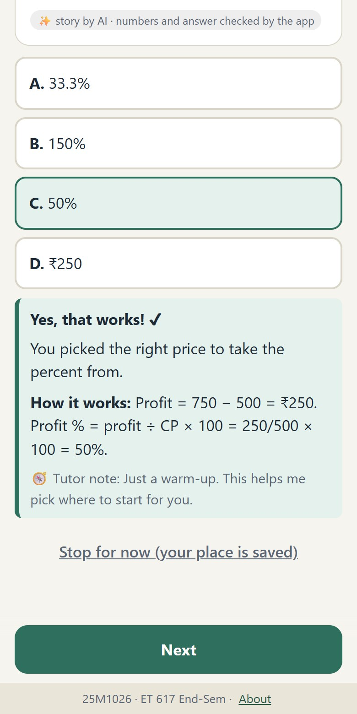
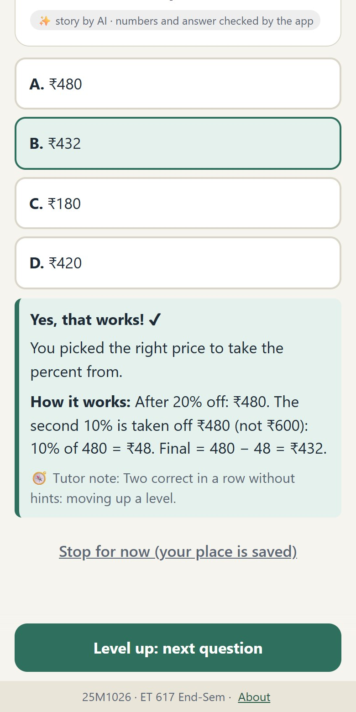
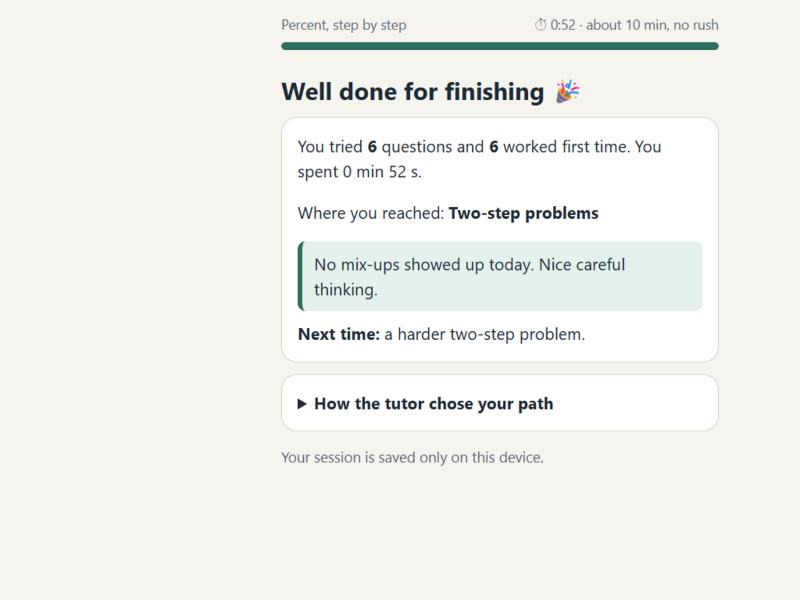
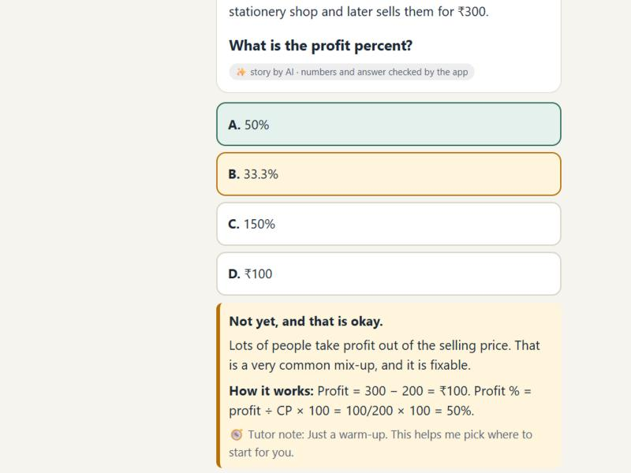
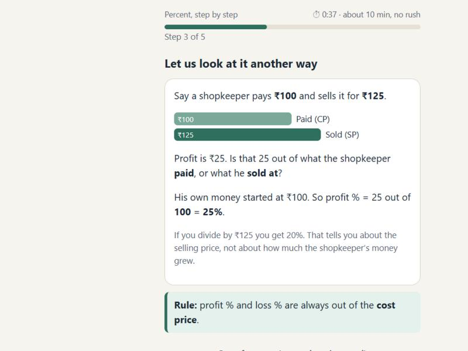
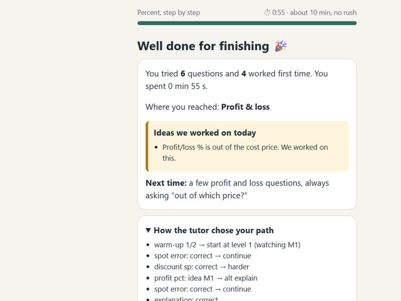

Percent, step by step: an adaptive tutor for discount, profit and loss
| Roll number | 25M1026 |
|---|---|
| P · T · L · C | P4 Adaptive tutor with automatic question generation · T9 (P4 bank) Percentages: discount, profit and loss (Class 8) · L5 Learner repeating the topic after failing once, high anxiety, low self-efficacy · C4 10-minute sessions |
| Live app | https://et617-25m1026.vercel.app |
| Repository | https://github.com/boltcannon/et617-endsem-25m1026 |
| Stack | Next.js 15 (App Router), React 19, TypeScript, Groq API (model openai/gpt-oss-20b), Vercel. No starter template or UI library; no code reused from any course project. |
Class 8 learners who have already failed a percentages test often freeze on word problems about discount, profit and loss. The problem is less arithmetic than not knowing which quantity the percent is of: profit and loss are out of the cost price, a discount is out of the marked price, and a second discount is out of the already-reduced price. Repeating textbook exercises with a red score reinforces "I am bad at maths". A short, low-stakes tutor is needed that works out which wrong idea the learner holds, shows why it fails, and sets the next task at the right level.
Context of use: at home in the evening, on a parent's phone (portrait, one hand), one sitting of about 10 minutes, with the option to stop and resume the next day.
| Name, age | Kavya Deshmukh, 13, Class 8, Pune |
|---|---|
| Background | Government school; textbook in English; speaks Marathi at home. Scored 9/30 on the percentages unit test and retakes it in three weeks. |
| Prior knowledge | Knows percent means "per hundred" and can find 10%, 50% of round numbers. Can add and subtract. Panics when a story has two prices. |
| Misconception M1 | Profit % = profit ÷ selling price × 100 (uses SP instead of CP). |
| Misconception M2 | Successive discounts add: 20% off then 10% off = 30% off (second discount taken from the original price). |
| Device and time | Mother's Android phone, 360 px wide, about 10 minutes after dinner. |
| Language | Plain, short English; shop words (sale, discount) are familiar. |
| Motivation | Does not want to fail again; wants to feel she can do it. |
"Percent of what?" Worked example: a shirt has marked price ₹500; 20% discount = ₹100, you pay ₹400. The shopkeeper bought it for ₹400 (CP) and sells for ₹500 (SP): profit ₹100, which is 100 out of the cost price ₹400 = 25%. Rule box: discount % is out of the marked price; profit/loss % is out of the cost price; the second of two discounts is out of the new, lower price.
| # | Format | Example item | Model answer |
|---|---|---|---|
| 1 | Numeric | What is 15% of ₹200? | 10% = 20, 5% = 10, so ₹30 |
| 2 | Numeric | Marked price ₹600, 40% discount. How much will you pay? | Discount ₹240; pay 600 − 240 = ₹360 |
| 3 | Multiple choice | Notebooks bought for ₹200, sold for ₹300. Profit percent? A 50% B 33.3% C 150% D ₹100 | A. Profit 100 ÷ CP 200 × 100 = 50% |
| 4 | Numeric | Bicycle bought for ₹400, sold for ₹300. Loss percent? | Loss 100 ÷ CP 400 × 100 = 25% |
| 5 | Multiple choice or numeric | Jeans ₹2000, 10% off, then a further 20% off. Final price? | After 10%: ₹1800. 20% of 1800 = 360. Final ₹1440 |
| 6 | Spot the wrong step | Aman: "Profit % = Profit ÷ SP × 100". Tap the wrong step. | Step 2 (should be ÷ CP) |
| 7 | Short explanation | Ria says 20% off then 10% off equals 30% off on ₹1000. Agree? Why? | No. The second 10% is of ₹800, not ₹1000, so the price is ₹720, not ₹700. |
| Case | Feedback |
|---|---|
| Correct | "Yes, that works! ✔ You picked the right price to take the percent from." + "How it works: …" worked line. |
| M1 (wrong base for profit/loss) | "Not yet, and that is okay. Lots of people take profit out of the selling price. That is a very common mix-up, and it is fixable." + worked line + next screen "Let us look at it another way" (₹100 paid, ₹125 sold: 25 out of 100 = 25%; "If you divide by ₹125 you get 20%…"). Rule: profit % and loss % are always out of the cost price. |
| M2 (discounts added) | "Not yet… Lots of people add the two discounts…" + next screen with bars ₹100 → ₹80 → ₹72 versus ₹70: "each discount is out of the price just before it". |
| Slip (e.g. gave the discount amount) | "That ₹240 is the discount, the money you save. The question asks what you pay." |
| Explanation, correct / M2 / unclear | "Yes, you spotted it. After 20% off, the shirt costs ₹800. The second 10% is taken from ₹800, so it is ₹80, not ₹100. Final price ₹720…" / "Good try, and many people think this. Check it: after 20% off ₹1000 the price is ₹800. Is the second 10% of ₹1000 or of ₹800?…" / "Thanks for trying. One hint: after the first discount the price is ₹800…" |
URL: https://et617-25m1026.vercel.app · identity token 25M1026 is in the footer of every screen and on the About screen.
| Screen / state | Learner input | System output and transition |
|---|---|---|
| 1 Home / resume | Start, or Continue where I left off | Starts or restores the saved session at the exact screen |
| 2 Warm-up (2 questions) | Numeric answer, then multiple choice; optional confidence tap and hint | Feedback (no marks), sets the start level and any misconception to watch |
| 3 Concept card | "Got it, let's practise" | Shows "percent of what?"; adds a gentle note if M1 or M2 was seen |
| 4 Practice (4 questions) | Choice, number, or tap a step; confidence tap; hint | Feedback, model working, "Tutor note" giving the reason for the next move |
| 5 Remedy / Rebuild | "Try one like it" | Alternative explanation (M1/M2) or prerequisite rebuild, then a question on that idea |
| 6 Explain it | One or two sentences (starter chips available) | Rule-based check plus one AI warm sentence |
| 7 Wrap-up | - | Questions tried, level reached, ideas worked on, next time, and "How the tutor chose your path" |
| 8 About | Footer link | Identity card and what AI does and does not do |
Interface: a step tracker at the top (a progress bar plus "Step n of 5" and the timer), lettered answer choices (A, B, C, D) as large tap targets, numbered "Step 1, 2, 3" buttons on the spot-the-error task, and one main button fixed at the bottom of the screen ("Check my answer", then "Next") so it stays within thumb reach. Correct choices turn green and mixed-up choices turn amber.
C4 constraint, visibly implemented: a 5-step sequence sized for about 10 minutes (the scripted runs below took under a minute of tapping; a real learner reads and thinks), a gentle on-screen timer ("about 10 min, no rush") and step bar, Stop for now (your place is saved) on every learning screen, and Continue where I left off on Home. State is saved in the browser after every action, including the exact question and feedback. I tested this by reloading the live page mid-session: Home offered "You left off at step 2 of 5".
Warm-up 2/2 correct, then 4 practice items all correct without hints. Tutor note after the second correct answer in a row: "Two correct in a row without hints: moving up a level." The explanation was classified as correct. Summary: 6 questions, 6 first time, reached "Two-step problems", "No mix-ups showed up today."



Warm-up 2: the learner chooses 9.1% (= 80 ÷ 880, profit out of the selling price). The app answers calmly in amber with "Not yet, and that is okay" and names the mix-up; the start level is lowered and M1 is watched ("warm-up 1/2 → start at level 1 (watching M1)"). In practice the learner makes the same error on another profit question. The tutor note reads "Your answer matches taking the percent out of the wrong price… A different explanation comes next." The learner sees the ₹100/₹125 bar explanation ("Let us look at it another way"), gets a follow-up question on the same idea, and then explains correctly. The wrap-up shows 4 of 6 first time, level "Profit & loss", and an "Ideas we worked on today" box. The system responded differently from scenario (a) at five points: lower start level, a concept-screen warning, a targeted item type, a different explanation, and an "ideas we worked on" summary.



lib/engine.ts, 13 unit tests passing) generates every number, computes every answer, tags misconceptions and picks the next step. The AI cannot grade or choose the path.| What it does | Rewords the setup sentence of a generated question in a fresh Maharashtra shop context. |
|---|---|
| Input (actual call) | system: You write one short setup (1-2 sentences, under 40 words) for a maths word problem for a Class 8 student in Maharashtra, India. Use rupees. Plain simple English, friendly. Use EXACTLY the given numbers and no other numbers. Do not ask a question. Do not give any answer or working. user: Reword this setup with a fresh everyday shop context but keep every number the same. Numbers that must appear: 1000, 1100 Setup: Neha buys a set of notebooks for ₹1000 and sells it for ₹1100.Model openai/gpt-oss-20b, temperature 0.6, reasoning effort low, 6 s timeout. |
| Actual output | "At the local stationery shop, Neha buys a bundle of notebooks for ₹1000 and later sells it for ₹1100." |
| Check before the learner sees it | Length 20 to 300 characters; no "?" or "="; every number in the text must be one of the given numbers and all of them must appear. The question sentence and the answer options are always app text, never AI. |
| If it fails or is wrong | Falls back to the template story and the badge changes from "✨ story by AI" to "📄 template story (AI off or failed the check)". Even a bad story cannot change the answer, because the answer is computed from the numbers, not from the story. |
| What it does | Adds one warm sentence above the app's fixed verdict for the learner's written explanation. |
|---|---|
| Input (actual call) | system: You are a kind tutor for an anxious 13-year-old who failed this topic once. Write EXACTLY ONE short sentence (max 20 words) that warmly acknowledges the effort or what the student wrote. Do not use any digits or currency symbols. Do not say whether the answer is right or wrong. Do not explain any maths. user: The student wrote: "yes it is 30 percent in total" Write the one warm sentence. |
| Actual outputs | "I can see you worked hard on that." · "I see you’re thinking carefully about how the discount is applied, and that effort is truly appreciated." |
| Check before the learner sees it | Single sentence, 15 to 160 characters, no digits or currency symbols, no verdict words (right, wrong, correct, great job, yes, no, more/less than…). |
| If it fails or is wrong | The line is dropped. The learner still sees the app's fixed, hand-written verdict. In three live test calls one output was rejected ("failed_validation"). |
My first version let the AI rewrite the whole feedback, and only checked its numbers. A live test produced: "Great job spotting the 30 percent idea! … after a 20 percent cut from $1000 you get $800 … $720, which is a bit less than the straight 30 percent … $700." It praised the misconception, used the wrong currency, and stated a false comparison (720 is more than 700) while passing the number check. I therefore restricted the AI to one number-free, verdict-free sentence and moved all maths and verdicts to fixed text, and added tests for this (test/validate.test.ts). Model availability also failed once: llama-3.3-70b-versatile and llama-3.1-8b-instant returned 404 for my key, so the route tries a list and the working model is openai/gpt-oss-20b.
Question generation (parameter sets filtered so answers are whole numbers), grading, misconception tagging (a numeric answer equal to profit ÷ SP, or a distractor mapped to M1/M2), the explanation classifier (keyword rules: "reduced / after / new price" → correct; "same / add / total / 30" → M2), and the adaptive decision rule in D7.
| Condition after an answer | Outcome | Seen on the live app |
|---|---|---|
| Correct, no hint, and the previous answer was also correct without a hint | Harder question: level +1 (levels: basics, discounts, profit and loss, two-step) | Scenario A: "Two correct in a row without hints: moving up a level." |
| Wrong, and the answer matches a known misconception (M1 or M2) | Alternative explanation, then a same-level item on that idea (multiple choice or spot-the-error) | Scenario B: tutor note "A different explanation comes next." |
| Wrong with no recognised pattern twice, or wrong after tapping "Not sure" | Prerequisite instruction ("x% of a number" from 10% and 1%), level −1 | Scripted run with random wrong answers: "Quick rebuild: x% of a number" appeared after two unrecognised errors |
| Correct but a hint was used | Stay at the level; no level change | Rule in decide(), covered by unit test |
Adaptation uses a 2-question warm-up to set the starting level (profile), the answers and misconception tags (performance), and hints and "not sure" taps (interaction).
The learner commits to an answer first and then sees a worked line, which creates a small cognitive conflict for M1 and M2 because the wrong answer is a plausible option. The learner finds the mix-up through the options and the spot-the-error task, then gets a contrasting explanation with a bar picture and a one-line rule. Hints are free (a prompt that points at the base, plus a 10% / 1% helper strip), and the explanation task offers sentence starters. The revision is checked with a follow-up question on the same idea (and, after a remedy on the last slot, one extra question).
Kavya has failed this topic once and expects to fail again, so the app removes the things that feel like a verdict. A miss is "Not yet, and that is okay", never "wrong". There are no scores and no red anywhere: a mixed-up choice turns amber, a correct one green, and the wrap-up lists "ideas we worked on" instead of mistakes. Hints are free and never counted against her, and an optional "Not sure" tap lets her say so honestly, which the tutor treats as a reason to rebuild the basics rather than push on. A step tracker (progress bar and "Step n of 5") shows how far she has come, so the session feels finite and achievable.
One complete sequence is five steps designed to take about two minutes each: warm-up, idea, practice (four questions), explain, wrap-up. A visible timer reads "about 10 min, no rush" and counts up rather than down, because a countdown would add pressure for an anxious learner. "Stop for now (your place is saved)" is on every learning screen; progress, including the exact question and feedback on screen, is saved to the browser's localStorage after every action, and "Continue where I left off" on the home screen restores it. I verified this by reloading the live page mid-session.
| Outcome | Assessment items | Logs to collect | Success |
|---|---|---|---|
| 1 Calculate with the correct base | Three unseen items (one discount, one profit, one loss), parameters different from practice | Per attempt: question kind, correctness, misconception tag, hint used, "not sure", time | At least 2 of 3 correct without a hint for at least 70% of learners |
| 2 Explain why 20% then 10% is not 30% | Written explanation scored with a 3-level rubric: names the reduced price as the base (2), only calculates (1), says "add" (0) | Explanation text, rule label, AI line shown or dropped | Rubric level 2 for at least 60% of learners |
| 3 Correct the wrong step | Two new spot-the-error items (one M1, one M2) | Step tapped, correct or not, misconception tag | Both correct for at least 70% of learners |
| Adaptive rule works | Compare learners whose M1 or M2 was tagged against their next same-idea item | Decision log (action, reason, level before and after) | Among tagged learners, at least 60% answer the next same-idea item correctly after the alternative explanation |
| Learner feel (L5) | One-tap "How did that feel?" at the end | Self-reported confidence before and after | Median confidence rises by at least one point |
Limitation: the app currently stores progress only in the learner's browser; the log fields above are tracked in memory but not sent to a server, and no real learners have used it yet. D5 shows scripted runs, not a user study. M2 and the prerequisite rebuild were exercised through unit tests and one scripted run; I did not capture a screenshot of the M2 remedy screen.
Tools: Claude Code (desktop app), used throughout the exam for design discussion, code, tests, deployment commands and a first draft of this report. AI chat export/share link: [ATTACH: export of this Claude Code session; add any other chats here in the order used].
| Order | What I asked the AI | What it produced | My judgement |
|---|---|---|---|
| 1 | Read the exam paper and summarise rules and deadlines | Checklist of deliverables and timing | Used to plan; I chose my own card (P4, T9, L5, C4). |
| 2 | Draft DESIGN.md from my card | Problem, outcomes, persona, content plan, adaptive rule | Kept; M1 and M2 chosen because they are well documented for this topic. |
| 3 | Build the engine, UI and AI route, with tests first for the engine | Next.js app, 13 passing tests | Reviewed behaviour on the live app by running both scenarios. |
| 4 | Debug the AI route | Found a retired model name; set a model list | Accepted. |
| 5 | Check AI feedback quality | Found the "$" and false-comparison output | Rejected the AI-written feedback design; narrowed the AI to one number-free sentence. |